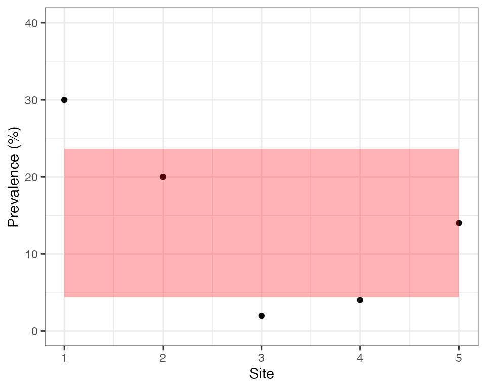

vignettes/rationale2_issue.Rmd
rationale2_issue.RmdThe type of data that we will work with is shown below. This is a very simple dataset consisting of a numerator and denominator for each site. The site-level prevalence is calculated as numerator over denominator, expressed as a percentage.
| site | n_tested | n_deletions | site_prevalence |
|---|---|---|---|
| 1 | 50 | 15 | 30 |
| 2 | 50 | 10 | 20 |
| 3 | 50 | 1 | 2 |
| 4 | 50 | 2 | 4 |
| 5 | 50 | 7 | 14 |
This example is even simpler than most real world datasets, as here the number of people tested is identical over all sites when in reality it often varies. So why is this a tricky dataset to analyse? How can we possibly get our analysis wrong here!?
Recall that our aim is to estimate prevalence of deletions at the domain level, meaning we will need to pool results over sites. One way to do this is to sum the number of deletions over sites, then sum the number tested over sites, then divide one by the other to get the prevalence. This gives 35 / 250 = 14%. This analysis assumes that all individuals are independent, i.e., they have the same probability of carrying the pfhrp2/3 deleted strain irrespective of what site they belong to.
We also typically want to construct a confidence interval (CI) on this result. A common approach for binomial data like this would be to use the Wald interval, defined as \(\hat{p} \pm z\sqrt{\frac{\hat{p}(1 - \hat{p})}{nc}}\), where \(\hat{p}\) is our estimate of the prevalence, \(n\) is the sample size per site, \(c\) is the number of sites and \(z\) is the critical value of the normal distribution (for a 95% CI we can use \(z = 1.96\)). For the data above we get 14% \(\pm\) 4.3%, which gives the interval (9.7% to 18.3%). Based on this interval we would confidently conclude that the prevalence of deletions is above 5% at the domain level.
But now look at the data again, this time focusing on the prevalence in each site. Notice that some sites are quite a bit higher than this 14% average level, while some are much lower. Could this be explained by random chance? We can explore this statistically by looking at the spread between sites. If individuals are completely independent then we would expect the variance in site-level prevalence to be approximately \(\frac{\hat{p}(1 - \hat{p})}{n}\). Hence, we would expect values to fall within the shaded region in the plot below around 95% of the time:

We can see that only 2 out of 5 sites fall inside this region, which is very unlikely by chance. Sites are therefore overdispersed, meaning there is a greater spread in values than we would expect by chance. Another way of looking at this is to say that individuals within a site are more similar to each other than we would expect by chance, i.e., there is intra-cluster correlation (ICC). These sound like two very different ideas, but in fact they are two sides of the same coin - if there is overdispersion between sites (clusters) then there must be ICC within sites, and if there is ICC then there must be overdispersion.
There are a range of factors that can cause intra-cluster correlation. Individuals in the same site may have similar behaviours, similar economic levels and access to care, similar risk factors or even similar phenotypes. The site itself (i.e., health facility) may also introduce correlations, for example the same hospital practices may affect the entire community. Finally, the actual process of disease transmission can introduce correlations, for example if there has been a local outbreak then we are more likely to see a second pfhrp2/3 deleted sample having seen a first.
If our data our overdispersed then there will be more uncertainty around our domain-level estimate than we originally expected. This means the CIs above will be too narrow and we risk of incorrectly concluding that prevalence is above 5%. One simple way to deal with this issue is to treat our 5 sites as 5 observations rather than 250 observations, ignoring the fact that we know the sample size per site. In this case, we would calculate the domain-level prevalence as the mean of the 5 site-level values. This calculation gives \(\hat{p} =\) 14%, exactly the same as before. The reason for getting the same value here is that sample sizes are the same over all sites, although in general the two methods may give different results.
But how should we construct a CI in this case? We are no longer treating our observations as binomial counts, meaning we should not use the Wald interval. First, we calculate the sample variance, \(s^2 = \frac{\sum_{i=1}^c (\hat{p}_i - \hat{p})^2}{c - 1}\), where \(\hat{p}_i\) is the observed prevalence in site \(i\). Then we calculate the CI as \(\hat{p} \pm z\sqrt{\frac{s^2}{c}}\) (to be even more exact we could take \(z\) from the Student’s t-distribution rather than the normal distribution). For our example data this gives 14% \(\pm\) 10.15%, which gives the interval (3.85% to 24.15%). This is a much wider CI than before, and this time it even spans 5% meaning we would not switch RDTs based on this result. We can see how the simple choice of how to construct CIs has a major effect on the study conclusions, and in this case would result in a different nationwide strategy with respect to switching RDTs. Hence, it is very important that we get this right!
This second way of constructing CIs is better than the first in that it takes into account overdispersion, but even this approach suffers from some weaknesses. Before getting into these issues we should talk about the design effect.